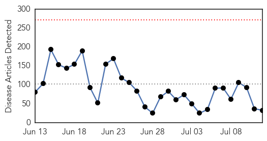
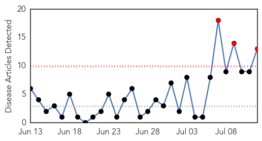
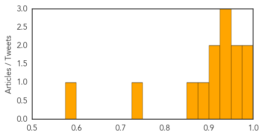

Unknown
30-Day Web Trend
0 alerts, 0 warnings

30-Day Twitter Trend
0 alerts, 0 warnings

Article Locations


Article Confidences

Top Articles:
- 0.974
- Texas: Cyclospora Sickens 151 - Source Unknown
- 0.973
- barfblog
- 0.973
- cyclospora
- 0.945
- Another lepto death, toll rises to 16 in two weeks
- 0.945
- Syphilis outbreak among Northern Territory Indigenous youth prompts fears for unborn children
- 0.938
- ICYMI: Vibrio Vulnificus Death Toll Up to 7
- 0.924
- One woman's Lyme disease fight: 'I went from straight As to having difficulty reading'
- 0.917
- Chicago Tribune
- 0.917
- Chicago Tribune
- 0.917
- Chicago Tribune
- 0.910
- The world windows to Thailand
- 0.910
- The world windows to Thailand
- 0.856
- North Carolina officials advise public on Eastern Equine Encephalitis after death of a horse
- 0.855
- Water samples from across the city to be collected
- 0.839
- Official offers insights into water parasite that has caused fatal infections
- 0.790
- Heat exhaustion cases on the rise, doctors advise caution
- 0.783
- Heat exhaustion cases on the rise, doctors advise caution
- 0.766
- Park likely to replace welfare minister
- 0.760
- Viral fever cases on the rise in Warangal Agency
- 0.739
- Minnesota boy who got brain infection after swimming dies
- 0.697
- barfblog
- 0.691
- Health Minister lauds group of medical workers being in risk of exposing HIV for saving patient
- 0.678
- Homer Glen residence yields second rabid bat this week
- 0.676
- Encephalitis Death Toll Mounts to 21 in WB
- 0.652
- Contaminated water consumption causes Gastro
- 0.612
- Health Ministry focuses funds on tuberculosis treatment
- 0.595
- Number of expectant women seeking maternal services grows in Kenya
- 0.580
- Fiona Stanley Hospital heating, hot water restored after repair work disruptions
- 0.568
- The Caledonian-Record
- 0.559
- Holistic Nutrition For Arthritis Massachusetts Springfield
- 0.536
- New $5.5 billion plan aims to rid world of polio by 2018
- 0.525
- Eggs, White Meat From Iran Banned to Help Prevent Outbreak of Bird Flu
- 0.501
- Korea- June rain has 'eased' drought crisis in North
Top Tweets:
-
No tweets found for Jul 12, 2015
West Nile Virus
30-Day Web Trend
3 alerts, 0 warnings

30-Day Twitter Trend
0 alerts, 0 warnings

Article Locations


Article Confidences
Top Articles:
- 0.992
- West Nile virus detected in Will County
- 0.990
- More cases of West Nile Virus have been detected in Illinois
- 0.965
- Watch Out For Mosquitoes This Summer
- 0.964
- This year, West Nile case has been first reported by Washington
- 0.937
- Mosquito test positive for West Nile in areas of Ohio
- 0.933
- Amid rainy summer, Ohio urges precautions against mosquitoes
- 0.927
- Montana's First Case Of The Year
- 0.923
- “The Courier ” Amid rainy summer, Ohio urges precautions against mosquitoes
- 0.910
- West Nile Virus On Rise In Bay Area, Present In Solano...
- 0.887
- Youngstown News, Amid rainy summer, Ohio urges caution with mosquitoes
- 0.871
- The Courier Amid rainy summer, Ohio urges precautions against mosquitoes
- 0.741
- Monsoons could bring more mosquitoes
- 0.598
- Health department provides tips to avoid West Nile
Top Tweets:
-
No tweets found for Jul 12, 2015